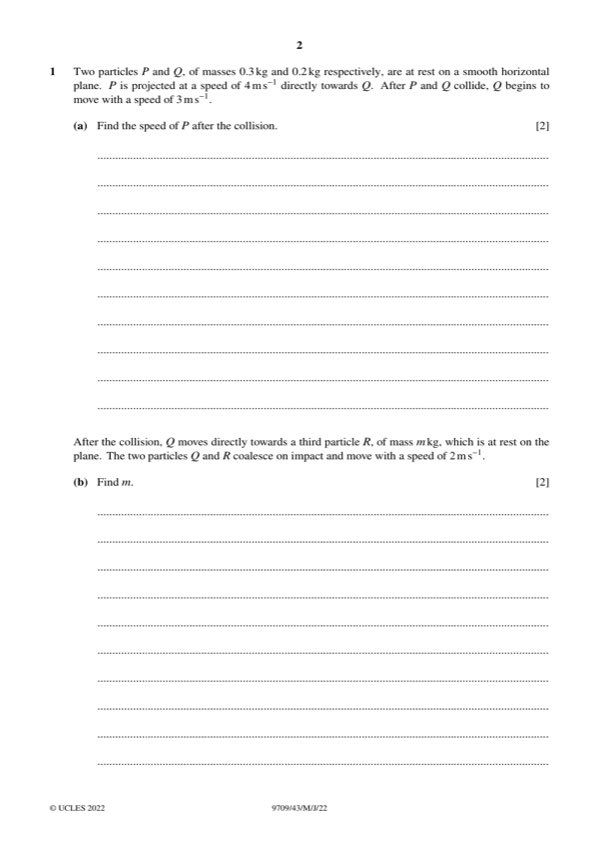

Question 1

Original paper page 2
Part 1(a) — solution
- [M1] For attempt at use of conservation of momentum
- [A1] Obtain/use: Speed = 2 ms−1
Mark points
- [M1] For attempt at use of conservation of momentum
- [A1] Obtain/use: Speed = 2 ms−1
Part 1 — solution
- [M1] Use of v u at OE
- [A1] Obtain/use: a = 4 ms−2
Mark points
- [M1] Use of v u at OE
- [A1] Obtain/use: a = 4 ms−2